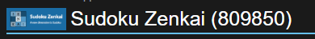
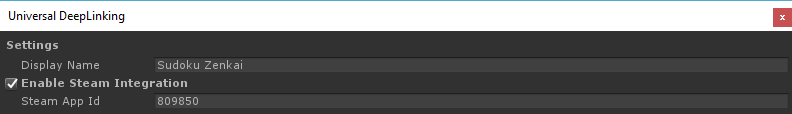

Preface
Regular Standalone Deep Linking opens up your game when someone clicks on a custom defined URI. But if your game is on Steam you are probably using its SDK or DRM capabilities to further enhance your players' experience.
If you open a Steam game from its installation folder, since it wasn't open via steam it probably won't be able to communicate with valve software in order to report achievements, stats, etc, or it won't simply launch due to the DRM feature.
So using the regular Deep Linking mechanism where we associate a custom URI to a game executable wouldn't work since the game would possibly lose functionality or simply wouldn't start.
To avoid this issue, instead of registering your game to your custom URI, we configure the target systems to open steam instead of your game, but we parameterize Steam to open your game as soon as it's initialized.
Configuring Steam Integration
To enable the Steam capability of ImaginationOverflow Deep Linking Plugin you first need to have a valid app id, for that you need to get access to Steam Direct. After that valve will attribute to your game an ID.

As an example, Sudoku Zenkai id is 809850.
Then you need to configure the plugin with this id:

The final step of the configuration to enable the Steam integration is setting the IsSteamBuild Property under DeepLinkManager:
1 | ImaginationOverflow.UniversalDeepLinking.DeepLinkManager.Instance.IsSteamBuild = true; |
If your game is on Steam there is a good chance that you offer DRM-free versions of it on other stores, so don't forget to turn off this option when making DRM-free standalone builds, a good way to do this automatically is using compilation flags.
1 2 3 4 5 | #if STEAM_BUILD ImaginationOverflow.UniversalDeepLinking.DeepLinkManager.Instance.IsSteamBuild = true; #else ImaginationOverflow.UniversalDeepLinking.DeepLinkManager.Instance.IsSteamBuild = false; #endif |
Mac and Steam Integration
Mac Deep Linking works a little different from the Windows and Linux, you have to take special care when integrating the plugin with Mac and Steam.
The OS itself doesn't know that is running a Steam game, so when the user clicks on a custom URI, the OS opens the game executable [MORE DEEP DIVE]. So you need to manually enforce the DRM after you get the deep linking data TO BE COMPLETEd